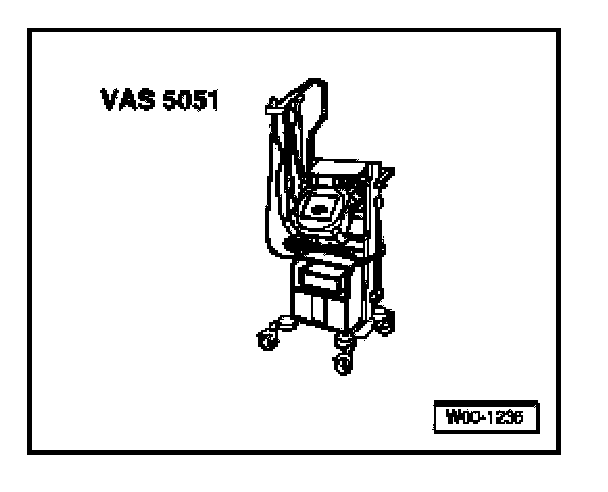

Transport Mode, Deactivating
Transport Mode, Deactivating
The Telematics system is disabled (switched-off) when Transport Mode is activated. This is necessary when vehicles are transported over long distances or stored for longer periods of time.
Volkswagen vehicles equipped with Telematics are initially delivered to dealerships with the system in Transport Mode, and must be deactivated using an OBD program function before delivery to the customer.
Special tools, testers and auxiliary items needed

- VAS 5051 Vehicle Diagnostic Testing and Information System
- Optional: VAS 5052 Vehicle Diagnostic and Service System
- Cable adapter VAS 5051/5a/6a or VAS 5052/3
- Connect VAS VAS 5052 with adapter cable to Data Link Connector (DLC) and select operating mode "Self Diagnosis"
- Select vehicle system (address word) "75 - Telematics"
- Select Function "10 - Adaptation" and press ">" to confirm
- Locate Channel 3
- Enter value "0" (Deactivate Transport Mode - Enable Telematics system)
- Remaining steps as prompted by tester.